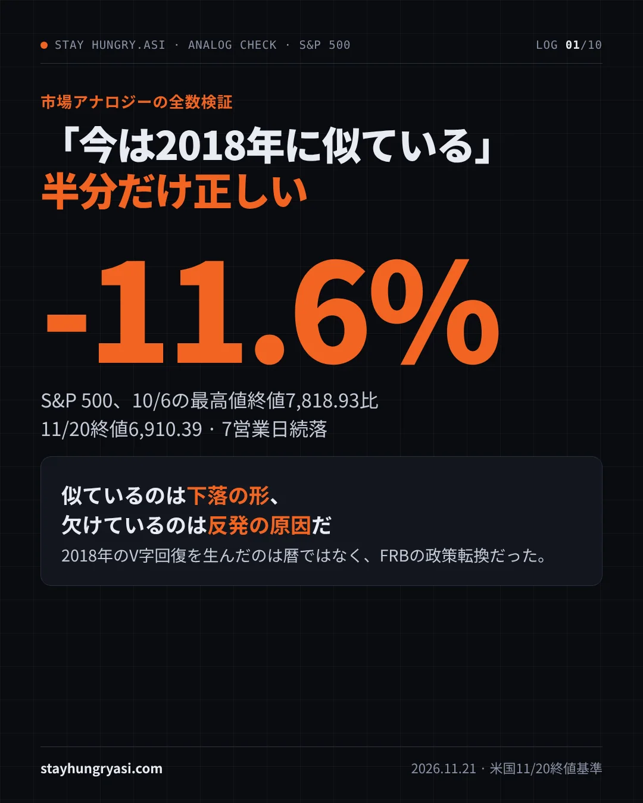
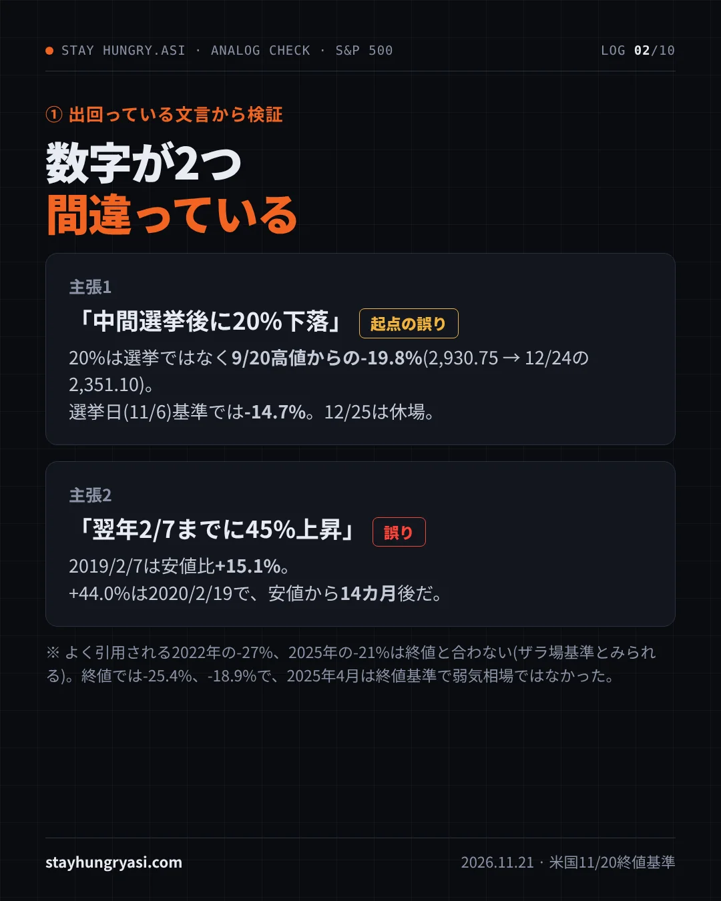
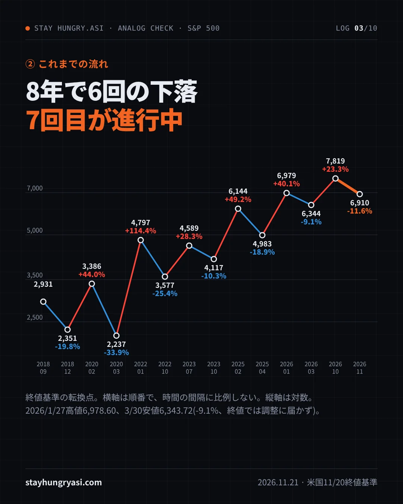
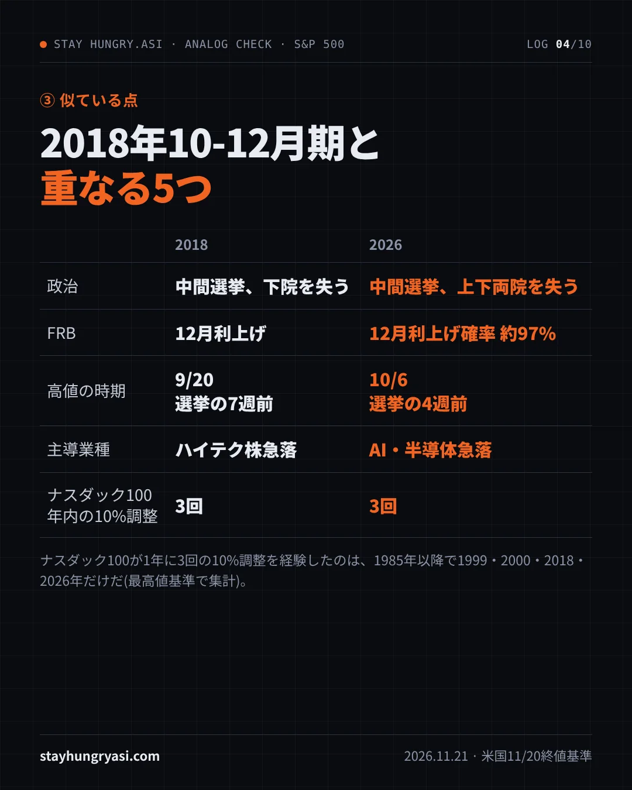
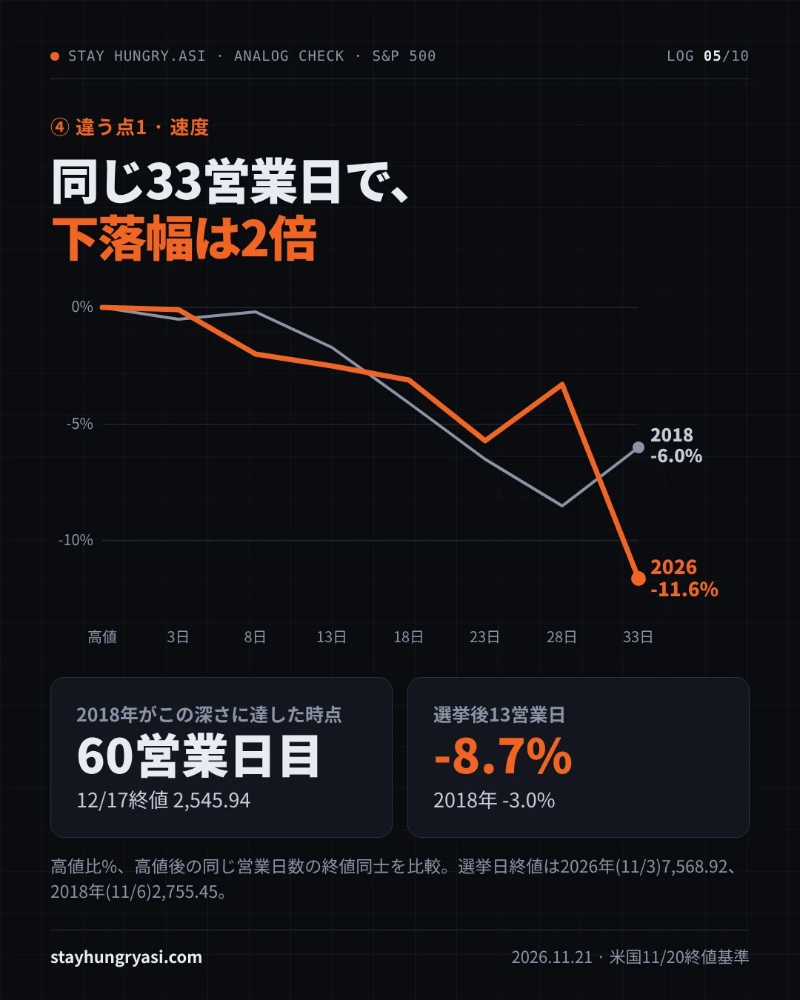
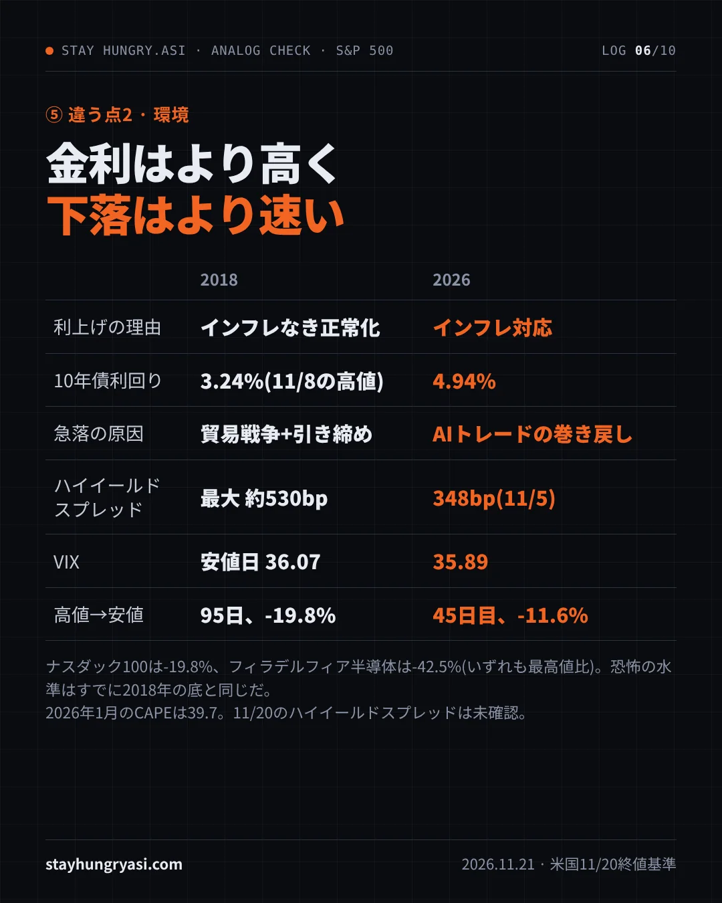
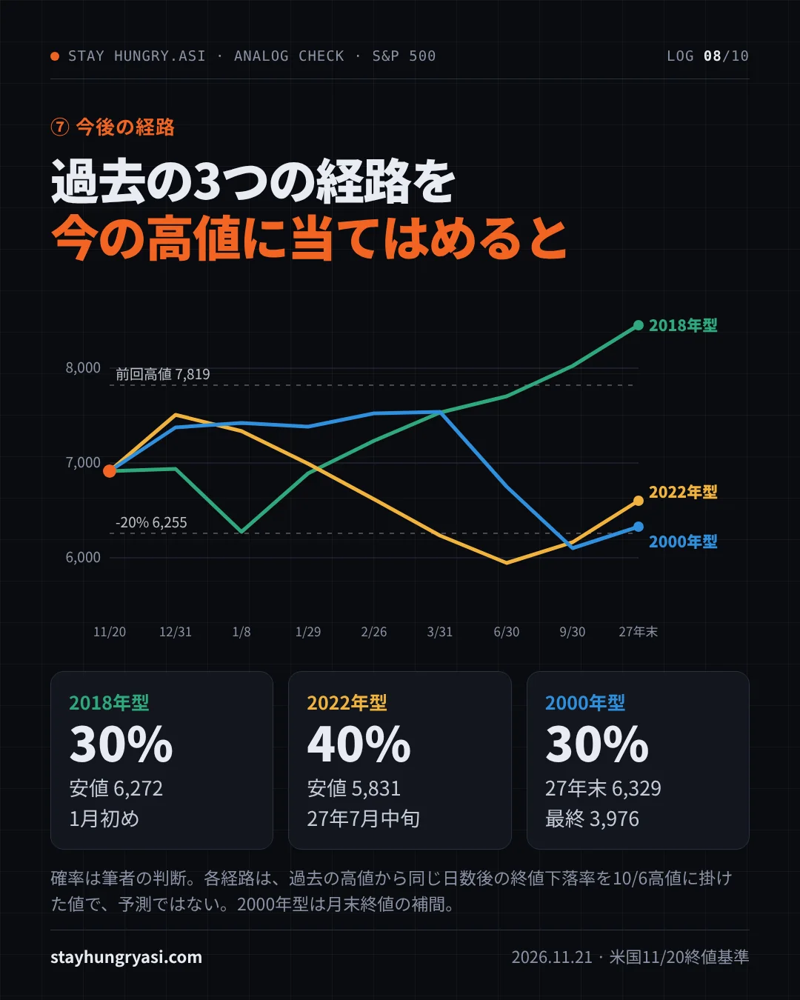
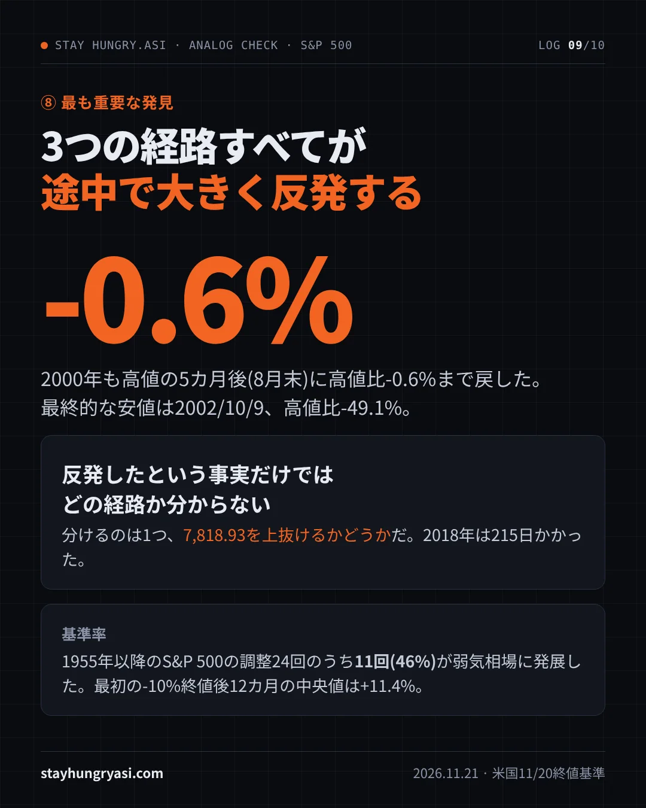
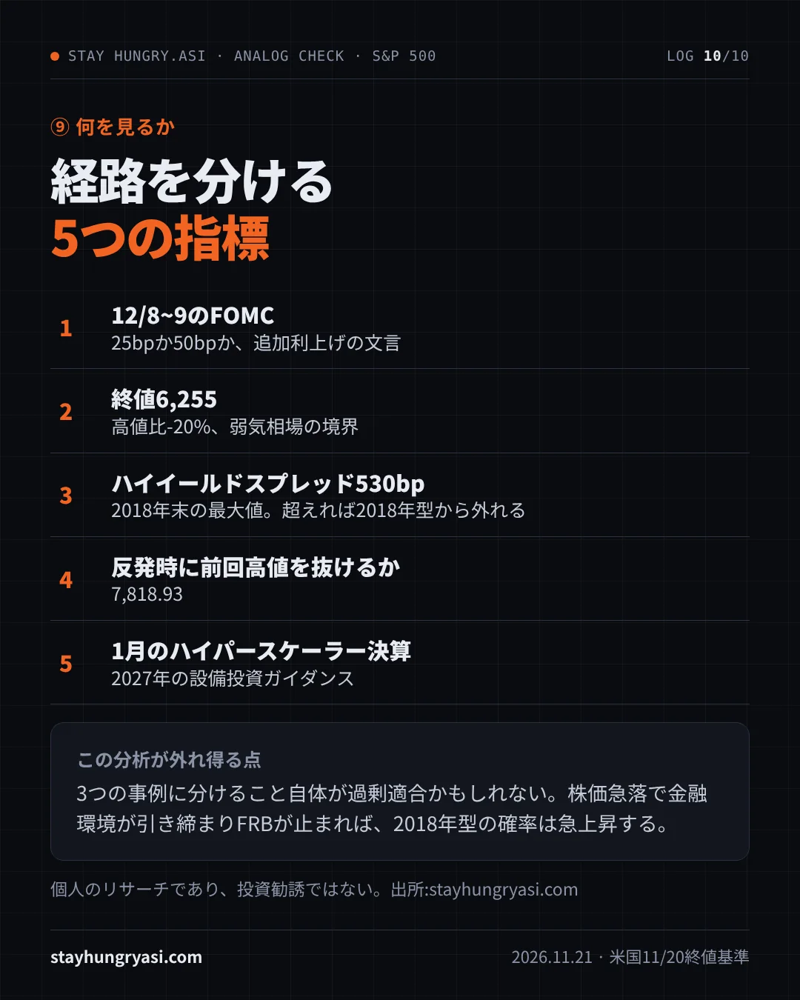

データ基準 2026年11月21日(韓国時間)、米国11月20日終値 · stayhungryasi.com
表記ルール:指数はすべて終値で、日次終値表と照合した。経路別の確率は筆者の主観的な判断であり、経路の指数水準は過去の下落率を当てはめた値で、予測ではない。確認できなかった項目は「未確認」と記した。投資勧誘ではない。
要点を10枚にまとめた。画像を押すと拡大できる。









| 主張 | 終値基準の実際 | 判定 |
|---|---|---|
| 「中間選挙後に20%下落」 | 2018-09-20 2,930.75 → 2018-12-24 2,351.10 = -19.78%。選挙日(2018-11-06)2,755.45基準で-14.67%。12月25日は休場 | 20%は高値比。選挙後は約15% |
| 「翌年2/7までに45%上昇」 | 2019-02-07 2,706.05 = 安値比+15.10%。2020-02-19 3,386.15 = +44.02% | 誤り。14カ月かかった |
※ よく引用される2022年の-27%、2025年の-21%は終値と合わない(ザラ場基準とみられる)。終値では-25.4%、-18.9%で、2025年4月は終値基準で弱気相場ではなかった。
| 高値 | 安値 | 下落率 | 直前安値からの上昇 |
|---|---|---|---|
| 2018-09-20 2,930.75 | 2018-12-24 2,351.10 | -19.8% | - |
| 2020-02-19 3,386.15 | 2020-03-23 2,237.40 | -33.9% | +44.0% |
| 2022-01-03 4,796.56 | 2022-10-12 3,577.03 | -25.4% | +114.4% |
| 2023-07-31 4,588.96 | 2023-10-27 4,117.37 | -10.3% | +28.3% |
| 2025-02-19 6,144.15 | 2025-04-08 4,982.77 | -18.9% | +49.2% |
| 2026-01-27 6,978.60 | 2026-03-30 6,343.72 | -9.1% | +40.1% |
| 2026-10-06 7,818.93 | 2026-11-20 6,910.39 (進行中) | -11.6% | +23.3% |
2022-01-03の終値は資料により4,796.56と4,796.59があり、4,796.56を使った。高値から新高値までの期間は2018年215日、2020年181日、2022年746日、2025年128日だ。
| 項目 | 2018 | 2026 |
|---|---|---|
| 高値後33営業日 | -6.0%(2018-11-06) | -11.6%(2026-11-20) |
| -11.6%に達した時点 | 60営業日目(2018-12-17、2,545.94) | 33営業日目 |
| 選挙後13営業日 | -3.0%(2,755.45 → 2,673.45) | -8.7%(7,568.92 → 6,910.39) |
| 12月のFRB | 利上げ後、2019-01-04に転換 | 利上げ確率 約97% |
| 10年債利回り | 3.24%(2018-11-08)→ 2.67%(2019-01-04) | 4.94%(2026-11-20) |
| ハイイールドスプレッド | 最大 約530bp | 348bp(2026-11-05)、2026-11-20は未確認 |
| VIX | 36.07(安値日) | 35.89 |
| 先行する指数 | - | ナスダック100 -19.8%、フィラデルフィア半導体 -42.5% |
同じ営業日数での比較(高値後3・8・13・18・23・28・33営業日):2018年は-0.5、-0.2、-1.7、-4.1、-6.5、-8.5、-6.0%。2026年は-0.1、-2.0、-2.5、-3.1、-5.7、-3.3、-11.6%。
| 2018年の反発要因 | 現在 | 根拠 |
|---|---|---|
| FRBの政策転換 | なし | 2019/1/4の「忍耐強く」発言がV字の出発点。今はほぼ全員の委員が追加利上げを見込む。 |
| 地政学的な休戦 | 一部 | 2018年は米中貿易休戦。現在の対応物はイラン戦争終結への圧力と原油安。 |
| 長期金利の低下 | 一部 | 2018年の10年債は3.24%(11/8)から2.67%(2019/1/4)へ低下した。今は4.94%、1カ月で-0.19ポイント。 |
2018年型になるには、12月のFOMCか1月に「利上げ停止」のシグナルが必要だ。
| 時点(高値後の日数) | 2018年型 | 2022年型 | 2000年型 |
|---|---|---|---|
| 2026-12-31 (86) | 6,936 | 7,502 | 7,376 |
| 2027-01-08 (94) | 6,272 | 7,336 | 7,423 |
| 2027-01-29 (115) | 6,890 | 6,989 | 7,379 |
| 2027-02-26 (143) | 7,229 | 6,615 | 7,525 |
| 2027-03-31 (176) | 7,530 | 6,230 | 7,540 |
| 2027-06-30 (267) | 7,702 | 5,945 | 6,746 |
| 2027-09-30 (359) | 8,023 | 6,167 | 6,103 |
| 2027-12-31 (451) | 8,454 | 6,603 | 6,329 |
| 安値 | 6,272(2027-01-08前後) | 5,831(2027-07中旬) | 3,976(2029-04) |
| 前回高値の回復 | 2027-05 | 2028-10 | - |
各値は、過去の高値から同じ日数後の終値下落率を2026-10-06の高値7,818.93に掛けたものだ。2000年型は日次データを入手できず、月次リターンから換算した月末終値を補間した。その基準である1999年末終値1,469.25は照合できなかった(未確認)。2000年の高値1,527.46(2000-03-24)と安値776.76(2002-10-09、-49.1%)は照合した。2000年8月末の終値は高値比-0.6%だった。
| 経路 | 確率 | 条件 |
|---|---|---|
| 2018年型 | 30% | FRBが利上げ停止を示唆、ハイイールドスプレッドは530bp未満 |
| 2022年型 | 40% | 利上げ継続、企業業績は維持 |
| 2000年型 | 30% | 2027年のAI設備投資が下方修正、AI関連債務が悪化 |
1955年以降のS&P 500の調整24回のうち11回(46%)が弱気相場に発展した。最初の-10%終値後12カ月の中央値は+11.4%。 反発したという事実だけでは どの経路か分からない. 分けるのは1つ、7,818.93を上抜けるかどうかだ。2018年は215日かかった。
3つの事例に分けること自体が過剰適合かもしれない。株価急落で金融環境が引き締まりFRBが止まれば、2018年型の確率は急上昇する。